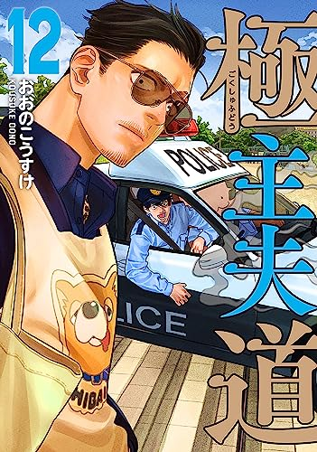
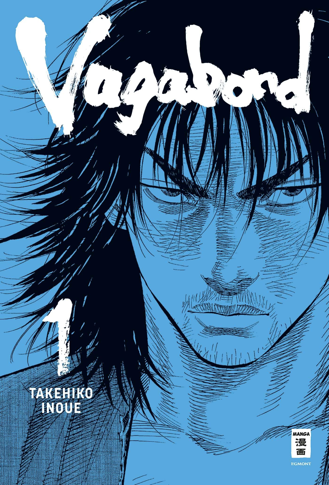
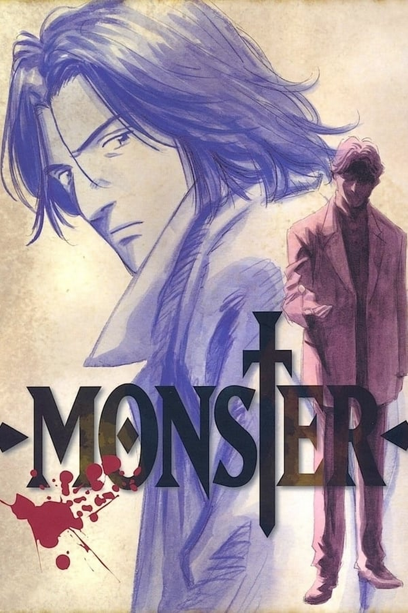
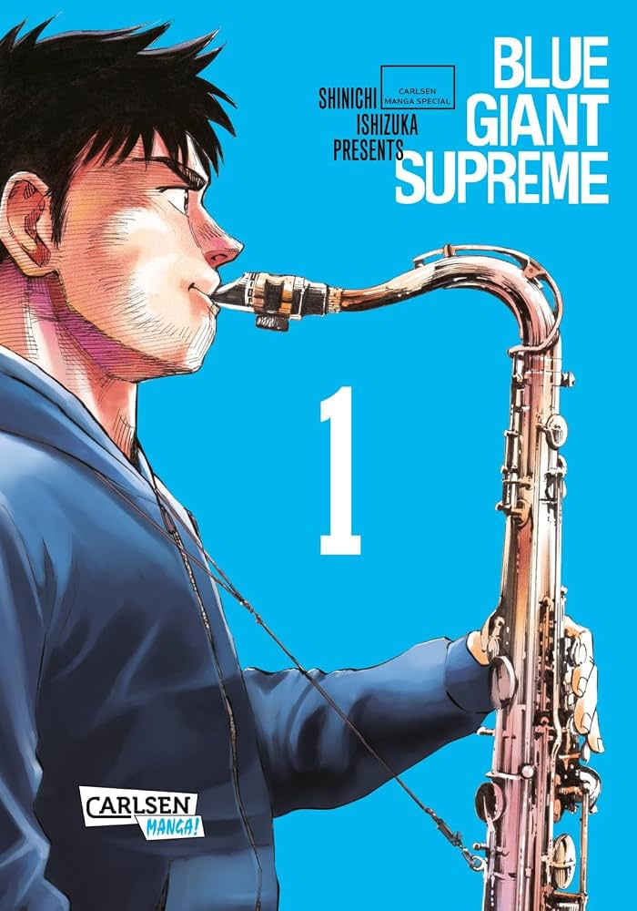
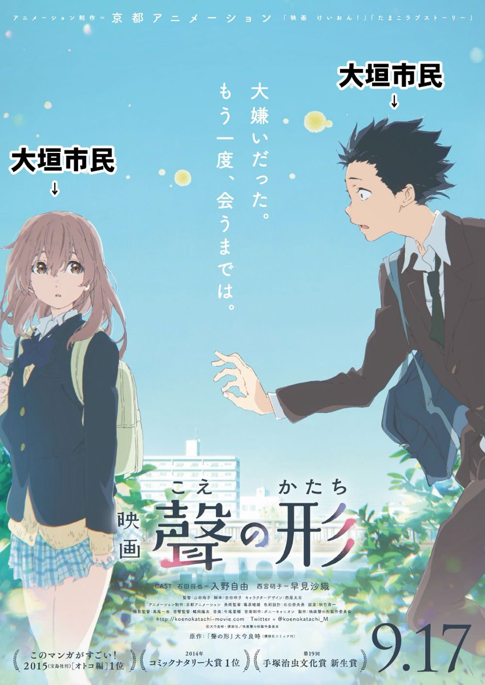

Top 10 Starter Manga for People Who Think They Don’t Like Comics

We have all had that exact conversation at a dinner party or in a gaming Discord voice channel. You mention a jaw-dropping visual twist in a serialized graphic narrative, and a friend waves their hand dismissively: “Yeah, I’m just not a comic book person. Superhero capes and goofy speech bubbles aren’t really my thing.”
The tragedy here isn't snobbery; it’s an outdated frame of reference. For decades, Western readers conditioned by mainstream American direct-market floppies assumed that sequential art is synonymous with muscle-bound vigilantes in spandex fighting intergalactic threats across seventy confusing multiverse timelines.
Japanese manga operates on an entirely different artistic and narrative axis. In Japan, manga isn't a genre; it is a universal literary medium. It encompasses high-stakes psychological chess matches, quiet culinary travelogues, grueling historical dramas, and visceral sociological studies. The black-and-white ink work, hyper-cinematic pacing, and focus on character interiority make it read far closer to cinematic literature than Sunday newspaper funnies.
If you have a skeptical friend or if you're a gamer or novel-lover lurking here wondering where to test the waters without getting bogged down by 1,000-chapter shōnen tropes-hand them this list. Here are ten undeniable gateway manga that dismantle the myth of "not being into comics."
1. Monster by Naoki Urasawa
Genre: Psychological Thriller / Crime Noir
The Pitch for Skeptics: The Fugitive meets The Silence of the Lambs in 1990s Central Europe.
There is a reason Naoki Urasawa is frequently dubbed the Hitchcock of manga. Set in post-Cold War Germany, Monster follows Dr. Kenzo Tenma, an elite Japanese brain surgeon who chooses to operate on a critically wounded young boy rather than the city’s corrupt mayor. Years later, Tenma discovers the boy he saved has grown into Johan Liebert: a charismatic, sociopathic monster orchestrating cold-blooded executions across Europe. Framed for murder, Tenma must sacrifice his career and medical ethics to hunt down his former patient.
There are no superpowers, no exaggerated panty jokes, and no melodramatic fight announcements. It is a taut, suffocating moral thriller rendered with cinematic realism that rivals prestige HBO television.
2. A Silent Voice (Koe no Katachi) by Yoshitoki Oima
Genre: Social Realism / Redemption Drama
The Pitch for Skeptics: A brutally honest, heartbreaking dissection of bullying, guilt, and emotional accountability.
Comics rarely confront social cruelty with the searing vulnerability of Yoshitoki Oima’s modern masterpiece. The story tracks Shoya Ishida, an elementary school kid who mercilessly bullies Shoko Nishimiya, a deaf transfer student, until she transfers away. Ostracized by his classmates in retaliation, Shoya spends his adolescence crippled by suicidal self-hatred-until he vows to track Shoko down, learn sign language, and make genuine amends.
Oima avoids saccharine after-school-special melodrama. Instead, she explores the messy, uncomfortable work of personal rehabilitation and communication barriers with stunning, deeply expressive character paneling.

3. Vagabond by Takehiko Inoue
Genre: Historical Epic / Philosophical Fiction
The Pitch for Skeptics: A sprawling samurai drama where fine art meets philosophical introspection.
Adapted from Eiji Yoshikawa’s biographical novel Musashi, Takehiko Inoue’s retelling of the life of Japan’s most legendary swordsman, Miyamoto Musashi, is a visual tour de force. Inoue trades typical ink pens for dynamic, breathtaking brushwork that looks like living sumi-e ink paintings.
Beyond the jaw-dropping visceral sword duels, Vagabond is an existential inquiry into what it actually means to be "invincible under the sun." It deconstructs violence, ego, and Buddhist philosophy with the literary weight of Tolstoy or Cormac McCarthy. Even comic-haters end up staring at double-page spreads for minutes in pure awe.
4. Pluto by Naoki Urasawa & Osamu Tezuka
Genre: Neo-Noir Sci-Fi / Mystery
The Pitch for Skeptics: Blade Runner meets Isaac Asimov’s robot laws.
Yes, Urasawa earns two spots on this list because his narrative engineering is unmatched. Reimagining an arc from Osamu Tezuka’s classic Astro Boy, Pluto reframes a nostalgic robot battle into an unsettling, politically charged neo-noir murder mystery.
Europol detective Gesicht, a high-grade android, investigates a series of brutal slayings targeting the world’s most advanced robots and human robotics advocates. What follows is a devastating anti-war parable about artificial consciousness, grief, hatred, and the cycle of vengeance. It stands alongside Philip K. Dick’s best work.

5. The Way of the Househusband (Gokushufudō) by Kousuke Oono
Genre: Pure Comedy / Slice-of-Life
The Pitch for Skeptics: John Wick retires to become an obsessive suburban homemaker.
If someone thinks comics can't deliver laugh-out-loud comedic timing, give them three chapters of this. Tatsu, an infamous, scarred Yakuza legend known as "The Immortal Dragon," vanishes from the underworld only to resurface as a devoted stay-at-home husband supporting his white-collar designer wife.
The humor hinges entirely on juxtaposition: Tatsu approaches everyday mundane chores-coupons, baking bento boxes, Roomba breakdowns, yoga classes with the terrifying intensity and tactical slang of a gangland hit. The gag lands every single time due to Oono’s deadpan artwork and razor-sharp pacing.
6. Goodnight Punpun (Oyasumi Punpun) by Inio Asano
Genre: Psychological Coming-of-Age / Existential Drama
The Pitch for Skeptics: A haunting, unfiltered mirror held up to generational trauma, depression, and growing up.
Warning: this is not an easy read. Inio Asano’s magnum opus follows Punpun Onodera from childhood innocence into chaotic, fractured young adulthood. In a stroke of surrealist genius, Asano illustrates Punpun and his dysfunctional family as simple, minimalist bird-doodles, while rendering the surrounding urban world with hyper-detailed, photorealistic grit.
This stylistic dissonance strips away artifice, allowing the reader to project their deepest anxieties directly onto Punpun’s psychological descent. It is an unvarnished masterpiece of literary fiction that permanently alters how you view sequential art.

7. Delicious in Dungeon (Dungeon Meshi) by Ryoko Kui
Genre: Tactical Fantasy / Ecology & Gastronomy
The Pitch for Skeptics: For anyone who loves tabletop RPGs or cooking shows, but hates generic fantasy clichés.
At a glance, it sounds like an absurd gimmick: an adventuring party loses their supplies in a dungeon and survives by slaughtering monsters and cooking them into gourmet dishes. But Ryoko Kui is a world-building savant.
Rather than leaning on arbitrary video-game tropes, Kui constructs an airtight, logically coherent dungeon ecosystem where every monster’s anatomy, metabolism, and behavior makes biological sense. It quickly evolves from a clever culinary procedural into a deeply textured, morally complex epic about the predator-prey relationship and the human necessity of eating to live.
8. Blue Giant by Shinichi Ishizuka
Genre: Musical Drama / Passion & Drive
The Pitch for Skeptics: Whiplash minus the cynical abuse, injected with raw, kinetic love for jazz.
How do you convey the improvised fury of a tenor saxophone on silent paper? Shinichi Ishizuka manages it through sheer, explosive line art. The story tracks Dai Miyamoto, a high school basketball player in Sendai who hears live jazz once and becomes single-mindedly consumed by the dream of becoming the world’s best jazz player.
Blue Giant isn't about an innate prodigy cruising to victory; it’s an ode to raw blistered fingers, playing on riverbanks in freezing rain, and the obsessive, sweaty discipline required to master an instrument. When Dai blows into his horn, the ink literally vibrates off the page.
9. Death Note by Tsugumi Ohba & Takeshi Obata
Genre: Supernatural Thriller / Cat-and-Mouse Mind Games
The Pitch for Skeptics: The ultimate psychological duel between two arrogant geniuses.
Light Yagami, a genius high schooler cynical about the world's broken justice system, discovers a notebook dropped by a god of death: write any person's name while picturing their face, and they die. Light decides to purge the world of criminals to reign as a benevolent god, triggering an international manhunt spearheaded by "L," an eccentric, reclusive master detective.
Death Note is the quintessential page-turner. There are barely any physical brawls; instead, every page is an agonizing, multi-layered deductive mind game. It hooks people who usually read detective novels within the first ten pages.

10. Solanin by Inio Asano
Genre: Modern Slice-of-Life / Post-College Quarter-Life Crisis
The Pitch for Skeptics: The definitive graphic novel about the terrifying, aimless limbo of your early twenties.
If Goodnight Punpun is Asano’s darkest descent, Solanin is his warm, bittersweet indie film. Set in Tokyo, it follows Meiko, an exhausted office worker who impulsively quits her mundane job, and her boyfriend Taneda, a freelance illustrator stuck clinging to his college garage-band dreams.
Solanin captures the exact emotional texture of entering adulthood in a world that doesn't care about your youthful ideals. It is poignant, funny, devastating, and ultimately cathartic a single, tidy two-volume graphic novel that anyone who has ever felt lost in their career will cherish forever.
The Final Frame
The next time someone tries to tell you that "comics are just for kids" or "visual stories lack literary depth," don't bother arguing. Just hand them Monster, leave Vagabond on their coffee table, or slip them a copy of A Silent Voice.
Manga isn't an insulated niche; it's a vast storytelling medium that has spent decades mastering the art of moving an audience. Once someone realizes that, there's no turning back.
Which book was your personal "gateway drug" into reading manga, and what's your go-to recommendation for friends who swear they'll never read sequential art? Sound off in the comments below!
Disclaimer & Copyright Notice: All manga cover art and promotional illustrations used in this article are the property of their respective creators, publishers, and licensors (including Shogakukan, Shueisha, Kodansha, and Viz Media). They are featured here strictly under the principles of Fair Use and statutory quotation rights for educational, informational, and review purposes.